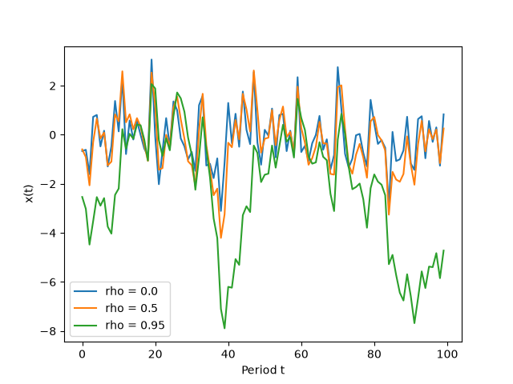
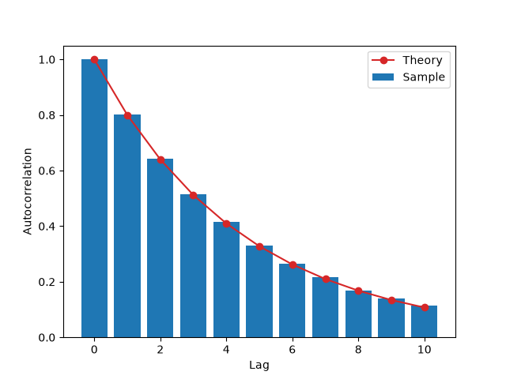
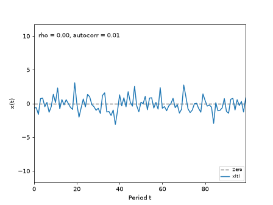

第 8 章: ランダム変数と確率過程¶
8.1 この章の地図¶
第 2 部では、景気循環のデータを分析します。景気循環は、ランダムなショックが、時間をかけて、広がっていく動きです。この章では、その動きを表す確率過程（ホワイト・ノイズと AR(1)）を、関数にして、理論値と、シミュレーションの結果を、突き合わせます。
| 項目 | 内容 |
|---|---|
| 経済学の題材 | ホワイト・ノイズ、AR(1)、自己相関、定常性、ショックの持続性と半減期 |
| 使う Python の機能 | 乱数の生成器（np.random.Generator）を引数で渡す、for ループによる系列の作成、np.asarray、Sequence と NDArray の型ヒント |
| 新しく導入するライブラリ | なし |
| 完成形 | white_noise、ar1_series、sample_autocovariance、sample_autocorrelation、autocorrelation_function、ar1_variance、ar1_autocorrelation、shock_half_life、ar1_impulse_response |
| ファイル | 実装: lib/chapter08/stochastic.py、lib/chapter08/plot.py（系列と自己相関の図）／テスト: test/chapter08/test_stochastic.py、test/chapter08/test_plot.py（自分で書くときは、practice/chapter08/ に、同じ名前で作ります） |
経済学の式とコードの対応¶
| 経済学・統計学 | 式 | コード |
|---|---|---|
| ホワイト・ノイズ | ε(t) は、平均 0、分散 σ²、期の間で無相関 | white_noise(n, sigma, rng) |
| AR(1) | x(t) = ρ·x(t−1) + ε(t) | ar1_series(rho, sigma, n, rng) |
| 標本の自己共分散 | Σ (x(t) − x̄)(x(t−k) − x̄) ÷ n | sample_autocovariance(x, lag) |
| 標本の自己相関 | ラグ k の自己共分散 ÷ 分散 | sample_autocorrelation(x, lag) |
| AR(1) の分散 | σ² ÷ (1 − ρ²) | ar1_variance(rho, sigma) |
| AR(1) の自己相関 | ρ^k | ar1_autocorrelation(rho, lag) |
| ショックの半減期 | ln 0.5 ÷ ln|ρ| | shock_half_life(rho) |
| インパルス反応 | ρ^t × ショック | ar1_impulse_response(rho, periods, shock) |
記号について: この章の ρ は、AR(1) の係数（持続性）で、σ は、ショックの標準偏差です（第 1 シリーズの第 8 章の σ と同じ使い方）。ρ は、後の章の限界消費性向などとは別です。一覧は、記号について を参照してください。
前提とする内容¶
| できること | 出典 |
|---|---|
| 乱数の生成器を引数で渡して、種を固定したテストを書く | 第 1 シリーズの第 8 章 |
| 1 階差分方程式の安定性（|a| < 1） | この記事の第 4 章 |
| 半減期の考え方 | この記事の第 5 章 |
8.2 予想する¶
AR(1) x(t) = ρ·x(t−1) + ε(t) で、ρ = 0.5、σ = 1 とします。
- x(t) の分散は、いくつですか（x の分散は、ρ² × 分散 + σ² を満たします）
- ラグ 1、ラグ 2 の自己相関は、いくつですか
- ρ を 0.95 に上げると、系列の見た目は、どう変わりますか
8.3 確率過程の考え方¶
ホワイト・ノイズ¶
期ごとに、独立に引かれる、平均 0 の乱数です。過去の値から、未来を予想する手がかりが、ありません（自己相関が 0）。経済のショック（技術・政策・需要の変化）のモデル化に使います。
AR(1)¶
今期の値が、前期の値の ρ 倍と、新しいショックで決まります。
- |ρ| < 1 なら、定常です（分散・自己相関が、時間によらず一定）。ρ = 1 では、ランダム・ウォークになり、分散が時間とともに広がり、定常ではありません
- ρ が 1 に近いほど、持続的です。ショックの影響は、毎期 ρ 倍になるので、半減期は ln 0.5 ÷ ln ρ です
- 分散は σ² ÷ (1 − ρ²)、ラグ k の自己相関は ρ^k です
第 4 章の差分方程式 x(t+1) = a·x(t) + b で、a = ρ、b = 0 と見ると、ショックへの反応（インパルス反応）は、第 4 章の経路そのものです。景気循環は、AR(1) でよく近似されます。
8.4 プログラミング¶
乱数の生成器を、引数で渡す¶
乱数を使う関数は、結果が毎回変わるので、テストしにくくなります。乱数の生成器を、引数で渡して、テストでは種を固定します（第 1 シリーズの第 8 章と同じ方針です）。
def test_ホワイトノイズの平均は0で標準偏差は指定した値に近い() -> None:
x = white_noise(100_000, 2.0, np.random.default_rng(0))
assert x.mean() == pytest.approx(0, abs=0.03)
assert x.std() == pytest.approx(2.0, abs=0.03)
def test_種が同じなら同じ系列() -> None:
a = white_noise(10, 1.0, np.random.default_rng(5))
b = white_noise(10, 1.0, np.random.default_rng(5))
assert a.tolist() == b.tolist()
def test_系列の長さは正でなければならない() -> None:
with pytest.raises(ValueError, match="長さ"):
white_noise(0, 1.0, np.random.default_rng(0))
def test_標準偏差は負にできない() -> None:
with pytest.raises(ValueError, match="標準偏差"):
white_noise(10, -1.0, np.random.default_rng(0))
def _check_sigma(sigma: float) -> None:
if sigma < 0:
raise ValueError("標準偏差は 0 以上でなければならない")
def white_noise(n: int, sigma: float, rng: np.random.Generator) -> NDArray[np.float64]:
"""平均 0、標準偏差 sigma の、独立な正規乱数 n 個。乱数の生成器を、引数で渡す。"""
if n < 1:
raise ValueError("系列の長さは 1 以上でなければならない")
_check_sigma(sigma)
return rng.normal(0.0, sigma, n)
標本の自己相関¶
標本の自己相関を、手計算できる小さな例で、確かめます。x = [1, 2, 3, 4] の平均は 2.5 で、ラグ 1 の自己共分散は ((−1.5)(−0.5) + (−0.5)(0.5) + (0.5)(1.5)) ÷ 4 = 0.3125 です。分散（ラグ 0 の自己共分散）は 5 ÷ 4 = 1.25 なので、自己相関は 0.3125 ÷ 1.25 = 0.25 です。
def test_自己共分散を手計算と比べる() -> None:
assert sample_autocovariance(X, 0) == pytest.approx(1.25)
assert sample_autocovariance(X, 1) == pytest.approx(0.3125)
def test_自己相関を手計算と比べる() -> None:
assert sample_autocorrelation(X, 0) == pytest.approx(1)
assert sample_autocorrelation(X, 1) == pytest.approx(0.25)
def test_自己相関関数はラグ0から並べる() -> None:
assert autocorrelation_function(X, 2) == pytest.approx([1, 0.25, -0.3])
@pytest.mark.parametrize("lag", [-1, 4, 10])
def test_ラグは0以上で系列の長さより短くなければならない(lag: int) -> None:
with pytest.raises(ValueError, match="ラグ"):
sample_autocovariance(X, lag)
def test_定数の系列では自己相関は求められない() -> None:
with pytest.raises(ValueError, match="変動"):
sample_autocorrelation([2.0, 2.0, 2.0], 1)
def sample_autocovariance(x: Sequence[float] | NDArray[np.float64], lag: int) -> float:
"""標本の自己共分散 = Σ (x(t) − 平均)(x(t−lag) − 平均) ÷ n。"""
values = np.asarray(x, dtype=float)
n = len(values)
if lag < 0 or lag >= n:
raise ValueError("ラグは 0 以上で、系列の長さより短くなければならない")
centered = values - values.mean()
return float((centered[lag:] * centered[: n - lag]).sum() / n)
def sample_autocorrelation(x: Sequence[float] | NDArray[np.float64], lag: int) -> float:
"""標本の自己相関 = ラグ lag の自己共分散 ÷ 分散（ラグ 0 の自己共分散）。"""
variance = sample_autocovariance(x, 0)
if variance == 0:
raise ValueError("系列に変動がないので、自己相関は求められない")
return sample_autocovariance(x, lag) / variance
def autocorrelation_function(
x: Sequence[float] | NDArray[np.float64], max_lag: int
) -> NDArray[np.float64]:
"""ラグ 0 から max_lag までの自己相関を並べる（ラグ 0 は 1）。"""
return np.array([sample_autocorrelation(x, lag) for lag in range(max_lag + 1)])
標本の分散は、n で割ります（n − 1 ではありません）。自己相関は、自己共分散と分散の比なので、割り算の分母がそろっていれば、どちらでも同じです。
AR(1) を作る¶
def test_AR1の分散は理論値4_3に近い() -> None:
x = ar1_series(0.5, 1.0, 100_000, np.random.default_rng(2))
assert x.var() == pytest.approx(4 / 3, abs=0.05)
def test_AR1の自己相関はラグkでrhoのk乗に近い() -> None:
x = ar1_series(0.5, 1.0, 100_000, np.random.default_rng(2))
assert sample_autocorrelation(x, 1) == pytest.approx(0.5, abs=0.01)
assert sample_autocorrelation(x, 2) == pytest.approx(0.25, abs=0.01)
def test_rhoが負なら自己相関も負() -> None:
x = ar1_series(-0.7, 1.0, 100_000, np.random.default_rng(3))
assert sample_autocorrelation(x, 1) == pytest.approx(-0.7, abs=0.01)
def test_AR1の長さは指定どおり() -> None:
assert len(ar1_series(0.9, 1.0, 50, np.random.default_rng(0))) == 50
@pytest.mark.parametrize("rho", [1.0, -1.0, 1.5])
def test_rhoの絶対値が1以上なら定常ではない(rho: float) -> None:
with pytest.raises(ValueError, match="定常"):
ar1_series(rho, 1.0, 10, np.random.default_rng(0))
乱数のテストは、理論値に、十分近いことで確かめます（種を固定した、10 万個の系列で、分散は 1.333、ラグ 1・2・3 の自己相関は 0.501・0.251・0.123）。理論値は、1.333、0.5・0.25・0.125 です。
def _check_stationary(rho: float) -> None:
if abs(rho) >= 1:
raise ValueError("rho の絶対値が 1 以上なので、定常ではない")
def ar1_series(
rho: float, sigma: float, n: int, rng: np.random.Generator, burn_in: int = 200
) -> NDArray[np.float64]:
"""AR(1) x(t) = ρ·x(t−1) + ε(t) の系列を、長さ n で作る。
初期値の影響を消すために、最初の burn_in 個は捨てる。
"""
_check_stationary(rho)
shocks = white_noise(n + burn_in, sigma, rng)
x = np.zeros(n + burn_in)
for t in range(1, n + burn_in):
x[t] = rho * x[t - 1] + shocks[t]
return x[burn_in:]
最初の 200 個（burn_in）を捨てているのは、初期値（0）の影響を消すためです。

図の読み方:
- 3 本とも、同じ種の乱数（同じショック）から作りました。違いは、ρ だけです
- ρ = 0（青）は、ショックがそのまま現れ、すぐ平均に戻ります
- ρ = 0.95（緑）は、ショックの影響が長く残り、長い間、平均から離れたままになります（−8 まで下がっています）
理論値と、半減期¶
def test_AR1の分散の理論値() -> None:
# σ² ÷ (1 − ρ²) = 1 ÷ 0.75
assert ar1_variance(0.5, 1.0) == pytest.approx(4 / 3)
def test_rhoが1なら分散は求められない() -> None:
with pytest.raises(ValueError, match="定常"):
ar1_variance(1.0, 1.0)
def test_AR1の自己相関の理論値はrhoのk乗() -> None:
assert ar1_autocorrelation(0.5, 3) == pytest.approx(0.125)
assert ar1_autocorrelation(-0.5, 3) == pytest.approx(-0.125)
def test_ショックの半減期() -> None:
assert shock_half_life(0.5) == pytest.approx(1)
assert shock_half_life(0.9) == pytest.approx(np.log(0.5) / np.log(0.9))
@pytest.mark.parametrize("rho", [0, 1, -1, 1.2])
def test_半減期はrhoの絶対値が0より大きく1より小さいときだけ(rho: float) -> None:
with pytest.raises(ValueError, match="rho"):
shock_half_life(rho)
def ar1_variance(rho: float, sigma: float) -> float:
"""AR(1) の分散の理論値 σ² ÷ (1 − ρ²)。"""
_check_stationary(rho)
return sigma**2 / (1 - rho**2)
def ar1_autocorrelation(rho: float, lag: int) -> float:
"""AR(1) のラグ k の自己相関の理論値 ρ^k。"""
return float(rho**lag)
def shock_half_life(rho: float) -> float:
"""ショックの影響が半分になるまでの期間 = ln 0.5 ÷ ln|ρ|。"""
if not 0 < abs(rho) < 1:
raise ValueError("rho の絶対値は 0 より大きく 1 より小さくなければならない")
return math.log(0.5) / math.log(abs(rho))
| ρ | 分散（σ = 1） | ラグ 4 の自己相関 | ショックの半減期（期） |
|---|---|---|---|
| 0.5 | 1.33 | 0.06 | 1.0 |
| 0.85 | 3.60 | 0.52 | 4.3 |
| 0.9 | 5.26 | 0.66 | 6.6 |
| 0.95 | 10.26 | 0.82 | 13.5 |
| 0.99 | 50.25 | 0.96 | 69.0 |
ρ が 1 に近づくと、分散と半減期が、急に大きくなります。
インパルス反応¶
def test_インパルス反応は毎期rho倍() -> None:
assert ar1_impulse_response(0.8, 2) == pytest.approx([1, 0.8, 0.64])
def test_インパルス反応は第4章の差分方程式の経路と同じ() -> None:
assert ar1_impulse_response(0.8, 10, shock=2.0) == pytest.approx(
linear_path(0.8, 0, 2.0, 10)
)
def ar1_impulse_response(
rho: float, periods: int, shock: float = 1.0
) -> NDArray[np.float64]:
"""1 回のショックの影響の推移 ρ^t·shock。第 4 章の差分方程式（a = ρ、b = 0）。"""
return np.array(linear_path(rho, 0, shock, periods))
標本の自己相関と、理論値を比べる¶
ρ = 0.8 の AR(1)（5000 個）の、標本の自己相関を、理論値 ρ^k と比べます。
| ラグ | 0 | 1 | 2 | 3 | 4 | 5 |
|---|---|---|---|---|---|---|
| 標本 | 1.000 | 0.801 | 0.643 | 0.515 | 0.415 | 0.330 |
| 理論値 0.8^k | 1.000 | 0.800 | 0.640 | 0.512 | 0.410 | 0.328 |

図の読み方:
- 棒が、標本の自己相関、赤い線が、理論値 ρ^k です。ラグが増えるにつれて、ρ の累乗で、小さくなります
- 標本と理論値は、よく一致します。自己相関のグラフの形から、ρ を読み取れます（ラグ 1 の値が、ρ の推定値になります）
予想の答え合わせ¶
予想した答えを、プログラムで確かめます。ρ = 0.5 と ρ = 0.95 の系列を、同じ種の乱数から 10 万個ずつ作ります。
import numpy as np
from lib.chapter08.stochastic import (
ar1_autocorrelation,
ar1_series,
ar1_variance,
sample_autocorrelation,
shock_half_life,
)
print("理論の分散（ρ = 0.5）:", round(ar1_variance(0.5, 1.0), 4))
print("理論の自己相関 ラグ 1・ラグ 2:", ar1_autocorrelation(0.5, 1), ar1_autocorrelation(0.5, 2))
for rho in (0.5, 0.95):
x = ar1_series(rho, 1.0, 100_000, np.random.default_rng(0))
print(
f"ρ = {rho}: 標本の分散 {round(float(x.var()), 3)}、"
f"ラグ 1 の自己相関 {round(sample_autocorrelation(x, 1), 3)}、"
f"範囲 {round(float(x.min()), 1)} から {round(float(x.max()), 1)}、"
f"半減期 {round(shock_half_life(rho), 1)} 期"
)
理論の分散（ρ = 0.5）: 1.3333
理論の自己相関 ラグ 1・ラグ 2: 0.5 0.25
ρ = 0.5: 標本の分散 1.332、ラグ 1 の自己相関 0.499、範囲 -4.8 から 4.9、半減期 1.0 期
ρ = 0.95: 標本の分散 10.348、ラグ 1 の自己相関 0.95、範囲 -12.4 から 12.1、半減期 13.5 期
- 1 つ目の問い: 分散は、4/3 ≈ 1.33 です（1 ÷ (1 − 0.25)）。10 万個の系列の標本の分散は 1.332 で、理論値に近い値です
- 2 つ目の問い: 自己相関は、ラグ 1 が 0.5、ラグ 2 が 0.25（ρ^k）です。標本のラグ 1 の自己相関は 0.499 でした
- 3 つ目の問い: ρ = 0.95 では、分散が 10.348（ρ = 0.5 の約 8 倍）になり、系列の範囲も、−4.8〜4.9 から、−12.4〜12.1 に広がります。ラグ 1 の自己相関は 0.95 で、ショックの半減期は 13.5 期（ρ = 0.5 では 1.0 期）です。ショックの影響が長く残り、系列は、ゆっくりと、大きく動きます
動かして見る¶
同じショックの列（乱数の種を固定）のまま、ρ を 0 から 0.98 へ上げます。ρ が小さいと系列は細かく動き、ρ が 1 に近いほど、ショックの影響が長く残って、ゆっくり大きく動きます。ラグ 1 の標本の自己相関も、ρ に近づきます。

このアニメーションは、lib/animations/ の関数で作っています（uv run python -m tools.render_animations で、GIF を書き出します）。写経は、不要です。動きを見て、式と図の対応を、確かめてください。
実行結果¶
cd apps/macro-programming/python
uv run pytest test/chapter08
33 passed
8.5 規則で言うと¶
- 乱数の生成器を、引数で渡す。 種を固定すれば、結果が再現できる。テストは、理論値に十分近いことで確かめる
- 理論値と、シミュレーションを突き合わせる。 関数が正しいかを、数式の答え（分散・自己相関）で確かめる
- 持続性は、ρ で決まる。 ρ が 1 に近いほど、ショックの影響が長く残る
混同しやすい点を、表にまとめます。
| 混同しやすい点 | 違い |
|---|---|
| ホワイト・ノイズ と AR(1) | ホワイト・ノイズは、自己相関が 0。AR(1) は、ρ のぶんだけ、前期に引きずられる |
| 定常 と 平均に戻る | |
| 標本の自己相関 と 理論値 | 標本は、ばらつく（短い系列ではとくに）。理論値に近いかを、長い系列で確かめる |
このモデルが成り立たない場面¶
- 実際の景気循環は、AR(1) より、複雑です。 2 期以上前の値にも依存したり（AR(2)）、ショックが非正規だったり、時期によって性質が変わったりします
- 標本の自己相関は、系列が短いと、偏ります。 実際のマクロ・データは、数十〜百数十個しかなく、ρ の推定は、不確かです
- トレンドを取り除いていない系列では、ρ が 1 に近く見えます。 次の章で、トレンドと循環に分けます
8.6 練習問題¶
| 種類 | 問題 |
|---|---|
| 想起 | 本文を閉じて、x = [1, 2, 3, 4] の、ラグ 1 の自己相関（0.25）を確かめるテストを書いてください |
| 生成 | 解説を見る前に、系列から ρ を推定する estimate_rho(x)（ラグ 1 の自己相関）を、テストから書いてください。ρ = 0.7 の AR(1)（2000 個）で、推定値が 0.7 に近いことを確かめます |
| 多様 | ρ を 0.5、0.9、0.99 に変えて、ショックの半減期と、ラグ 4 の自己相関の理論値を、先に予想してから求めてください |
| 交互 | 第 5 章の half_life(speed)（収束の速さ λ から求める半減期）を、ρ = 0.9 のときの shock_half_life と比べてください。どう関係しますか |
解答（先に自分で取り組んでから、開いてください）
想起:
def test_自己相関を手計算と比べる() -> None:
assert sample_autocorrelation([1.0, 2.0, 3.0, 4.0], 1) == pytest.approx(0.25)
生成: AR(1) のラグ 1 の自己相関は ρ なので、標本のラグ 1 の自己相関が、ρ の推定値になります。
def estimate_rho(x):
return sample_autocorrelation(x, 1)
def test_AR1の係数を推定する() -> None:
x = ar1_series(0.7, 1.0, 2000, np.random.default_rng(10))
assert estimate_rho(x) == pytest.approx(0.7, abs=0.05)
推定値は 0.702 でした。系列が短いと、ばらつきます（標準誤差は、おおよそ √((1 − ρ²) ÷ n)）。
多様: ρ が 1 に近いほど、半減期が、急に長くなる、と予想できます。
def test_rhoを変えたときの半減期と自己相関() -> None:
assert shock_half_life(0.5) == pytest.approx(1.0)
assert shock_half_life(0.9) == pytest.approx(6.58, abs=0.01)
assert shock_half_life(0.99) == pytest.approx(68.97, abs=0.01)
assert ar1_autocorrelation(0.9, 4) == pytest.approx(0.656, abs=0.001)
assert ar1_autocorrelation(0.99, 4) == pytest.approx(0.961, abs=0.001)
ρ = 0.5 で 1.0 期、0.9 で 6.6 期、0.99 で 69.0 期です。ρ が 0.99 のように 1 に近いと、四半期のデータでは、ショックの影響が、17 年も残ります。
交互: 第 5 章の収束の速さ λ は、1 期当たりに、乖離が縮む割合で、乖離は毎期 (1 − λ) 倍になります。AR(1) のショックの影響も、毎期 ρ 倍なので、λ = 1 − ρ と読めば、同じ半減期になります。
def test_半減期は第5章の半減期と同じ() -> None:
assert shock_half_life(0.9) == pytest.approx(half_life(1 - 0.9))
ソロー・モデルの資本の収束も、AR(1) のショックの消え方も、同じ「毎期一定の割合で縮む」動きです。
8.7 振り返り¶
- 予想した分散 4/3 と、自己相関 0.5・0.25 は、当たりましたか
- ρ が 1 に近いと、なぜ、分散と半減期が急に大きくなるのかを、説明できますか
- 乱数を使う関数のテストで、何に気をつけましたか
8.8 まとめ¶
- ホワイト・ノイズと AR(1) を、乱数の生成器を引数にした関数で作り、手計算の自己相関と、理論値（分散・自己相関）で確かめた
- ショックの半減期は、ρ で決まる。第 4・5 章の差分方程式と、同じ構造
- 次の章では、実際のマクロ時系列を、トレンドと循環に分け、循環の大きさ・相関・自己相関を調べます